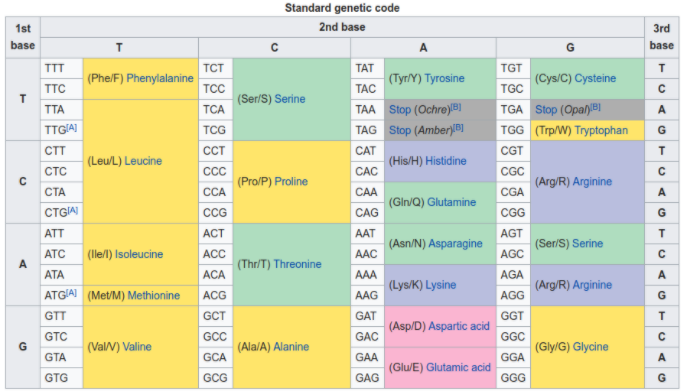
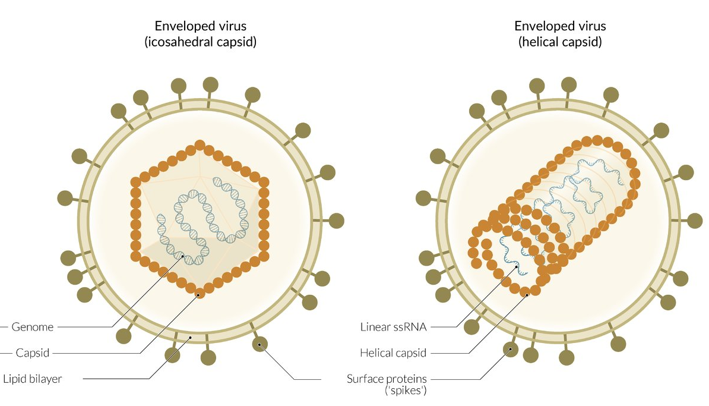
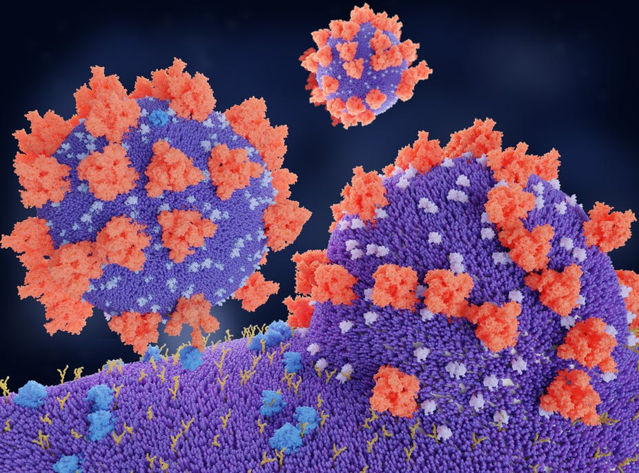
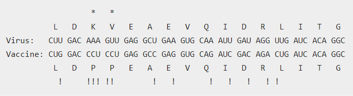

Introduction
In this article, I provide an overview of the biology of Covid and how Covid vaccines work; atleast as best as someone with no formal training in Biology can 😊.
All the content in this post comes from fantastic resources I found online. All of these have been listed in the references section.
Central Dogma of Life
To understand how the vaccines work, it is best to briefly understand how life works.
One of the major breakthroughs in molecular biology was the discovery of the following mechanism - also known as the central dogma of molecular biology,
\[ DNA \rightarrow RNA \rightarrow Amino\ Acids \rightarrow Protein \]
DNA
As you may know, DNA contains the recipe for creating and running a living organism. Just like all computer programs are ultimately sequences of bits(0 or 1). DNA is a sequence of nucleotides (A-Adenine,C-Cytosine,T-Thymine and G-Guanine) stored in the nucleus of the cell.
DNA is equivalent to Read only Memory(ROM) that permanently stores instructions on your computer.
RNA
To carry out a specific task you need to read the instructions from the ROM. This is where RNA comes in.
Our cells have molecular machines that can read snippets of DNA and convert them into RNA molecules. The RNA molecule typically contains a subset of the information stored in the DNA. It is equivalent to reading something essential from a computer’s ROM to its RAM (Random Access Memory). The information in the RAM is meant to carry out a specific task and is quickly discarded. Similarly RNA are created for a specific task : to instruct the cell how to create amino acids and proteins. They are quickly discarded after the task is complete. RNA molecules are therefore fragile and short lived.
Just like DNA, the RNA is also a sequence of four nucleotides - A-Adenine,C-Cytosine,U - Uracil and G-Guanine.
The messenger RNA or mRNA is an RNA molecule that carries information about a gene (a sequence of nucleotides in the DNA) from the nucleus into the cytoplasm (outside the nucleus) where amino acids are made. Given mRNA are generated inside the nucleus, the body is primed to quickly identify any mRNA that does not originate in the nucleus and destroy it.
Amino Acids
DNA encodes for Amino Acids using combinations of 3 nucleotides - called codons. There are 64 possible codons (4x4x4). AAA is a codon so is CTG.
There are 20 different amino acids encoded by these 64 codons, some codons encode the same amino acid. E.g. CTT and CTC encode for the same amino acid - Leucine as shown below.

Figure 1: DNA/Codon Table from Wikipedia
Proteins
All proteins are created using some combination of amino acids.The genes in our body - through a sequence of codons - encode the amino acids that are to be used to create a protein.
For example the smallest protein discovered so far is TRP-Cage. It comprises 20 amino acids derived from the saliva of Gila monsters!
Asn Leu Tyr Ile Gln Trp Leu Lys Asp Gly
Gly Pro Ser Ser Gly Arg Pro Pro Pro Ser
Proteins are created by a molecular machine in the cell called the ribosome. The ribosomes reads a strand of RNA and produces a sequence of amino acids called a polypeptide.The polypeptide is then folded into a 3D structure - the protein. The 3D structure of the protein is a key determinant of the function of a protein.
SARS-Cov-2 virus
The SARS-Cov-2 virus is a single-stranded RNA enveloped virus. The image below shows two types of enveloped viruses.

Figure 2: Image from amboss.com
SARS-COV-2 resembles the one on the right. It has a Linear single strand RNA(rather than DNA as shown in the image on the left), a helical capsid (a protein shell enclosing the RNA) , a lipid bi-layer and “spike” proteins.
The lipid bi-layer that envelopes the virus is extremely vulnerable to organic solvents (e.g. alcohol),detergents and dry heat.
This is why scientists have been encouraging us to wash our hands and wipe down groceries with alcoholic wipes.
The spike protein is critical to the life cycle of the virus. It binds to the ACE2 protein in human cells, creating a hook to attach to human cells. The ACE2 protein in our cells thus acts as a cellular doorway or receptor for the SARS COV2 virus.

Figure 3: Covid-19 coronavirus binding to ACE2 receptors: Source: Juan Gaertner/Science Photo Library
Once the virus binds to a target cell, activation of the spike protein allows the virus to enter the cell.
The ACE2(Angiotensin-converting enzyme 2) protein in our bodies is vital in modulating the activities of another protein called angiotensin II(ANG II).ANG II increases blood pressure and inflammation causing damage to blood vessel lining and other types of tissue injury. Most critically, ANG II can increase inflammation and the death of cells in the alveoli in the lungs; alveoli are critical for absorbing oxygen into the body.
When the SARS-Cov2 virus binds to ACE2, it prevents ACE2 from performing its normal function of cutting up ANG-II . Without ACE2 to regulate it, ANG II can wreak havoc - injuring cells in the lungs and the heart.
Vaccines
All major vaccines attempt to trigger the human body into producing anti bodies to identify and destroy the spike protein along with the virus that carries it.
Types of Vaccines
- mRNA
- viral vector
- protein subunit
- attenuated or inactivated virus
mRNA
The mRNAvaccines effectively deceive the cells in the human body to produce the spike protein. This triggers our immune system into a response against the protein and any virus anchoring it.
This article explains how the Pfizer-BioNtech vaccine is engineered.
Here are the key takeaways
As described in the RNA section, RNA are fragile. For this reason these vaccines have to be stored at very low temperatures.
mRNA vaccines are synthetically generated RNA that can induce our cells to produce the spike proteins. They have been intelligently engineered in ways to deceive our immune system from destroying it.
Our body usually identifies and destroys any foreign RNA. To evade the immune system, the Pfizer-BioNTech vaccine replaces the U nucleotide in RNA with a different molecule $ $. With this replacement, the immune system loses interest in the RNA and does not destroy it.
A stretch of the mRNA vaccine encodes the actual spike protein with some minor modifications as shown below:

Figure 4: Spike protein encoding in vaccine and virus
- In the first codon (CUU), the U nucleotide is flipped to G, this enhances protein production in the cell
- The spike proteins are stable when mounted on the virus, but can quickly collapse into an unrelated structure if it stands alone. Replacing two amino acids K(AAA) and V(GUU) with Proline (CCU) - a very rigid amino acid prevents this and ensures the spike proteins produced by our cells are stable.
The original virus mRNA has thus been modified in this vaccine.Further the protein being expressed has also been modified to give it more stability.
This mRNA has to be carried into the cell. mRNA vaccines use mRNA carriers for this purpose. All the mRNA vaccines use lipid nano particles as carriers.
Carriers molecules should have lots of positive charges on them. Given RNA has lot of negatively charged phosphate groups,the two match up to create stable combinations. Lipid nano particles have been found to be very effective in protecting the mRNA as it travels through the bloodstream and also helps it cross through the cell membrane into the cell.
The Pfizer vaccine uses lipid nano particles developed by the Canadian company Acuitas.
mRNA vaccines also have the added advantage they only need to get into the cell and not the nucleus. A DNA based vaccine on the other hand will have to get into the nucleus of the cell where it could be accidentally incorporated into the genome.
Protein Sub Unit
This type of vaccine works by directly injecting the spike protein into the body. The spike protein is formulated to trigger the body into producing an immune response.
Attenuated Virus
This type of vaccine uses a dead or harmless version of the SARS-COV-2 virus. Given the virus has been attenuated, it will not trigger an immune response on its own. Therefore, this vaccine type uses an adjuvant to trigger an immune response from the body.
Such adjuvanted vaccines can cause more local reactions (such as redness,pain or swelling at the injection site) as well as systematic reactions (such as fever,chills and body aches) compared to non-adjuvanted vaccines.
On the plus side, such vaccines do not need to express a modified protein as they are hosted on the weakened virus.
Protein Expression
A key determinant of the efficacy of vaccines is how well the proteins are expressed or produced and how stable the proteins produced are.
Research has indicated that modified mRNA is two orders of magnitude (100x) better at expressing proteins than unmodified mRNA. We have also seen that modified spike proteins are more stable than unmodified spike proteins.
The following table captures the difference between the major vaccine types.
| Vaccine | Company | Type | Delivery Vehicle | Spike Protein Expression | Efficacy % (95% CI) | Doses | Cost per dose | Storage |
|---|---|---|---|---|---|---|---|---|
| BNT162b2/Tozinemeran/Comirnaty | Pfizer-BioNTech | modified mRNA | Lipid-nanoparticle | modified | 94.8 (89.8 -97.6) | x2 | $20 | -70 C |
| mRNA-1273 | Moderna | modified mRNA | Lipid-nanorparticle | modified | 94.1 (89.3 - 96.8) | 2 | $33 | -20C |
| CVnCoV | Curevac | Unmodified mRNA | Lipid-nanoparticle | modified | Not Available | 2 | $12 | 4 C |
| AZD1222/Covishield | Oxford-AstraZeneca | viral vector | NA | un-modified | 70.4 (54.8 to 80.6) | 2 | $4 | 4 C |
| Ad26.COV2-S | Johnson& Johnson | viral vector | NA | modified | 66 | 1 | $10 | 4 C |
| Sputnik V | Gamaleya Research Institute of Epidemology and Microbiology | viral vector | NA | NA | 91.6 (85.6-95.2) | 2 | $10 | 4 C |
| NVX-CoV2373 | Novavax | protein-subunit with adjuvant | NA | doubly modified | 89.3 (75.2 - 95.4) | 2 | $ 16 | 4 C |
| Covaxin | Bharat Biotech | attenuated virus with adjuvant | NA | NA | 81 | 2 | $ 4 | 4 C |
| Ad5 vectored vaccine | CanSino Biological Inc and Beijing Institute of BioTechnology | viral vector | NA | NA | 65.7 | 1 | $ 30.62 | 4 C |
Vaccine Efficacy and Effectiveness
Efficacy is the degree to which a vaccine prevents disease and possibly also transmission under ideal and controlled circumstances. This is measured only in Phase 3 of a vaccine’s clinical trial.The numbers in the table above measure vaccine efficacy
Phase 3 Vaccine clinical trials are Randomized Controlled trials where a subset of the population is selected based on factors such as age . This population is divided into a test group that receives the vaccine and a placebo group that receives a placebo.
Efficacy of 90% means a 90% reduction in cases of the diseases in the test group compared to the Vaccine group.
E.g. Assume there are 1000 people in either group. After administration of the vaccine or placebo, the number of people in each group are monitored for the disease. If 900 people in the placebo group contract the disease but only 100 people in the test group contract the disease, the efficacy is given by.
\[ \frac{900 -100}{900} \times 100 = 88.9 \%\]
Effectiveness is how well the vaccine performs in the real world in typical field conditions. Any factor that was not controlled for in the clinical trial such as gender, illness or quality of vaccine storage can reduce the actual effectiveness of the vaccine.
A study in Israel where over half a million people were vaccinated with the Pfizer - BioNtech vaccine indicates this vaccine has an effectiveness of 90.3% for asymptomatic cases and 93.7% for symptomatic cases.
It is clear that the Pfizer-BioNTech and Moderna vaccines are the most efficacious. Even with a single shot these two vaccines have efficacy of 92.6% and 91.6% respectively.
However, we need to keep in mind that most of these vaccines will be very effective in preventing severe cases of Covid that may result in hospitalizations - this is extremely critical.
For.e.g the J&J vaccine was 85% effective in preventing severe disease and offered complete protection against Covid related hospitalization and death 28 days after vaccination.
Many of the other vaccines also poses fewer logistical challenges and will still be very effective in breaking the transmission of the disease and ending the pandemic.
Variants
Viruses mutate all the time due to errors in the DNA/RNA replication mechanism. Any one of the four nucleotides in the SARS-COV-2 virus RNA genome can get switched.
Although the rate at which the SARS-Cov-2 virus mutates is much slower than that of others such as influenza or HIV, the scale of the pandemic means that variants of the virus that are more transmissible or resistant to vaccines may emerge due to natural selection.
Three variants that have emerged recently include
1)B.1.17
This was first detected in the UK in September 2020. This variant has incurred 23 mutations that differentiate it from it’s ancestor in the wild. Studies indicate that it is 35% - 45 % more transmissible than it’s predecessor.It has not been confirmed it is any more lethal than it’s predecessor.
- B.1.351
This was identified in South Africa in Dec 2020. This variant likely poses the biggest concern in the long run.
- P.1
This was identified in Brazil.
All these variants change the way the critical spike protein is expressed by the virus.The mutations in B.1.351 and P.1 seem to make it more difficult for the body’s antibodies to bind to the spike protein on the virus.
Studies have indicated that anitbodies from individuals vaccinated with the Moderna and Pfizer-BioNTech vaccines work well against the B.1.17 variant but less so against the B.1.351 variant. In fact, no vaccine has reported greater than 60% efficacy in preventing symptoms for the B.1.351 variant of Covid
The Novavax and Johnson&Johnson vaccines also appear to be less effective against these variants but should still be effective in preventing severe disease and hospitalizations.
Scientists and researchers are hard at work developing vaccines that are more effective against these variants. Moderna has in fact submitted a vaccine candidate designed specifically for the B.1.351 variant.This would be administered as a booster shot.
Conclusion
At a personal level, if the pandemic has a silver lining, it is that I have developed a greater appreciation for the biological sciences. I hope this blog does the same for you.
Also,I want to extend my gratitude to the thousands of health care workers who have been putting their lives on the line to keep us safe and the brilliant scientists who have made pandemic busting vaccines a reality in just over a year.
References
- Reverse Engineering the source code of the BioNTech/Pfizer Vaccine
- The Genetic Code and Proteins of Other Covid-19 vaccines
- Central Dogma of Molecular Biology
- https://www.genome.gov/genetics-glossary/messenger-rna
- Tc5b
- https://www.amboss.com/us/knowledge/General_virology
- https://www.nature.com/articles/s41401-020-0485-4#Sec2
- https://theconversation.com/what-is-the-ace2-receptor-how-is-it-connected-to-coronavirus-and-why-might-it-be-key-to-treating-covid-19-the-experts-explain-136928
- https://csvoss.com/a-mechanists-guide-to-the-coronavirus-genome
- https://twitter.com/profshanecrotty/status/1367179841217306626
- https://www.quantamagazine.org/how-to-understand-covid-19-variants-and-their-effects-on-vaccines-20210225/
- https://www.bloomberg.com/news/articles/2021-02-08/pakistan-says-cansino-s-covid-vaccine-shows-65-7-efficacy
- https://www.globaltimes.cn/content/1210093.shtml
- https://www.nejm.org/doi/full/10.1056/NEJMc2036242
- https://www.nejm.org/doi/full/10.1056/NEJMoa2035389
- https://www.clinicaltrialsarena.com/comment/covid-19-vaccine-protection/